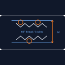

Bolt Circle
Hole spacing and X/Y coordinates.
CNC • CALCULATE • PROGRAM
From a quick bolt circle to the next setup. Machining calculators, CNC references and shop notes, together in BlueChip.
Android public release pending Google Play approval.
Follow the release status →

Shop-floor calculators, CNC programming references and notes built for fast use at the machine.
Keep your calculations, references and setup details close to the work.
QUICK ACCESS
SHOP NOTES
Illustrative app preview · layout adapted for this website
CALCULATE WITH LESS FRICTION
Find the tool, enter your dimensions and get back to the work. Decimal, fraction and mixed-number inputs keep everyday shop math moving.
Hole spacing and X/Y coordinates.
RPM, feed rate and chip load.

Thread measurement over wires.
Solve taper dimensions and angles.
Plan cuts and compare stock usage.
Work forward or solve from known dimensions.
MORE THAN A CALCULATOR
Search across the app, keep useful tools in Favorites, and bring your shop references and notes with you.
G-codes, M-codes, mill and lathe cycles, plus searchable tap drill and dimensional reference charts. Macro Programming and Subprogram guides are included with Pro.
Read and edit shop notes offline. Save useful results and find information through app-wide search. Shop content stays on your device until you choose to export or share it.
Dark and light themes, adjustable text size, saved calculator inputs and modes, and numeric input controls made for use at the machine.
BLUECHIP PRO
Take your work beyond the calculation. Organize the job, document the setup and keep your CNC programs ready to export.
A one-time purchase. No subscription. Your app store shows the price in your local currency.
Questions about Pro? Get in touch →FREE
LIFETIME PRO
BUILT WITH MACHINIST FEEDBACK
Have a technical correction or a tool you wish you had? Send a suggestion from the app or contact us.